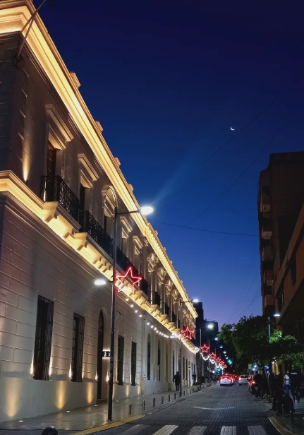
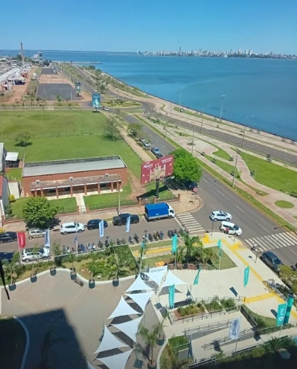
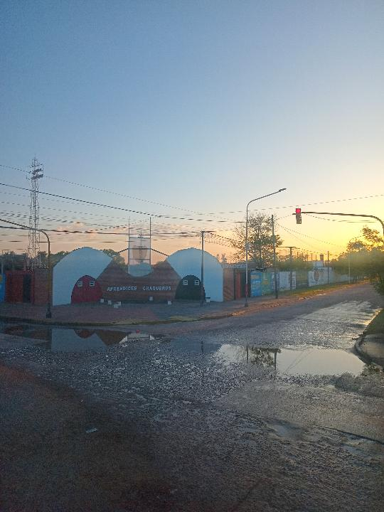
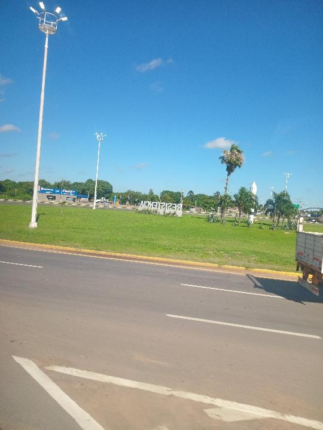
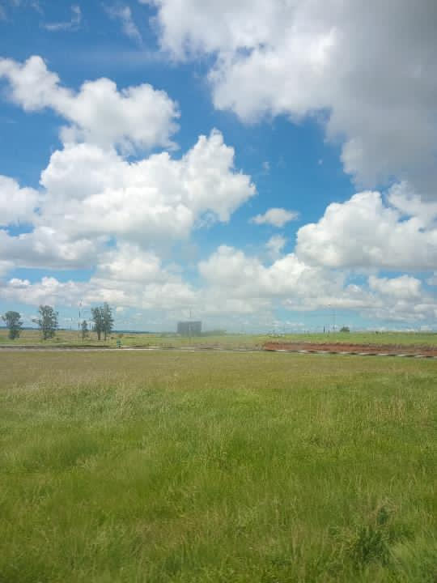
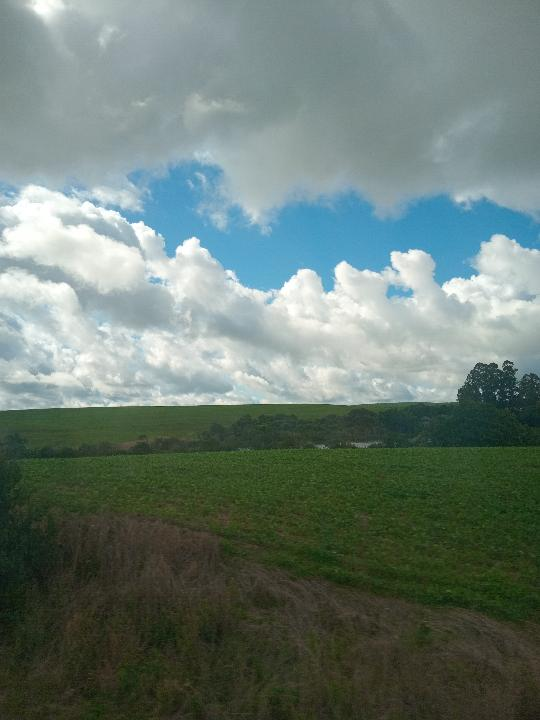
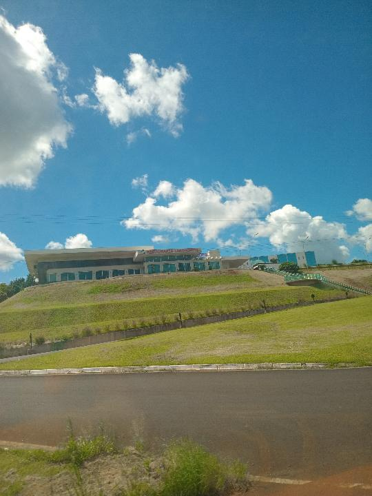
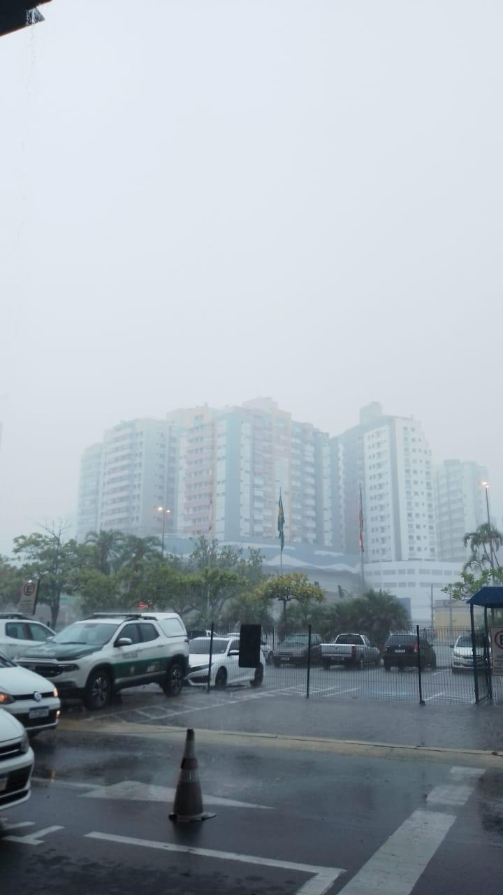
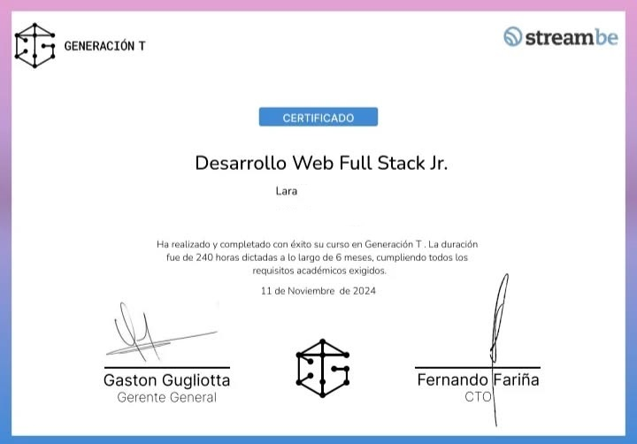

En 2023, explorando el movimiento y la expresión corporal.
Disciplina y trabajo en equipo a través del deporte de campo.
Capturando momentos desde mi perspectiva personal.
Momentos capturados a través de mi cámara.




















Encarnación, Paraguay. Apoyo logístico en el mayor evento juvenil de Paraguay.
Encarnación, Paraguay. Apoyo a atletas de alto rendimiento.



Programación Frontend y Backend.

Aportando en diversas areas del voluntariado (Gestión de Voluntariado) (Indumentaria, Acreditación e Hidratación).
Del 9 al 23 de Agosto de 2025.

Apoyo logístico, Acreditación e Hidratación.
Del 25 al 28 de Septiembre de 2025
Ignoren este certificado.
04Ignoren este certificado.
05
Ignoren este certificado.
06
Ignoren este certificado.
07
Detrás de cada provincia recorrida en Argentina, de cada frontera cruzada hacia Brasil y Paraguay, y de cada meta alcanzada, está él. Mi papá, quien me crió con amor y dedicación desde que era chiquita.
Más que viajes, lo que compartimos fue un aprendizaje constante. Él me enseñó que no importa qué tan lejos lleguemos, lo importante es con quién compartimos el camino. Estas 14 provincias y 3 países no son solo puntos en un mapa, son los kilómetros que construyeron nuestra historia juntos.
Gracias por ser mi guía y mi mejor compañero de aventuras. ❤️
Te quiero, Pá!
Familia Contrera